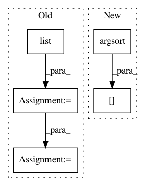

8c8417497aff9741449d9bd3681cad6aea06283a,tmtoolkit/preprocess/_tmpreproc.py,TMPreproc,get_dtm,#TMPreproc#Any#Any#,947
Before Change
logger.info("generating DTM")
workers_res = self._get_results_seq_from_workers("get_num_unique_tokens_per_doc")
dtm_alloc_size = sum(flatten_list([list(num_unique_per_doc.values())
for num_unique_per_doc in workers_res]))
vocab = self.get_vocabulary(sort=True)
self._cur_dtm = create_sparse_dtm(vocab, self.doc_labels, self.tokens, dtm_alloc_size, dtype=dtype,
vocab_is_sorted=True)
else:
vocab = None
if as_data_frame:
After Change
// sort according to document labels
// dtm_vocab == self.vocabulary (both sorted) but dtm_doc_labels is not sorted
self._cur_dtm = dtm[np.argsort(dtm_doc_labels), :]
vocab = dtm_vocab.tolist()
else:
self._cur_dtm = csr_matrix((0, 0), dtype=dtype) // empty sparse matrix
vocab = list()
In pattern: SUPERPATTERN
Frequency: 3
Non-data size: 5
Instances
Project Name: WZBSocialScienceCenter/tmtoolkit
Commit Name: 8c8417497aff9741449d9bd3681cad6aea06283a
Time: 2019-06-19
Author: markus.konrad@wzb.eu
File Name: tmtoolkit/preprocess/_tmpreproc.py
Class Name: TMPreproc
Method Name: get_dtm
Project Name: dirty-cat/dirty_cat
Commit Name: d3ec733c425e7d9d066380b95e04605843339bd0
Time: 2018-11-08
Author: maxime.cuny@inria.fr
File Name: dirty_cat/similarity_encoder.py
Class Name:
Method Name: get_prototype_sorted_by_frequencies
Project Name: tensorflow/models
Commit Name: cce6c09b1c11350f135f07322855f5b9ab7f5b03
Time: 2019-03-06
Author: rodryeluno@hotmail.com
File Name: research/im2txt/im2txt/inference_utils/caption_generator.py
Class Name: CaptionGenerator
Method Name: beam_search